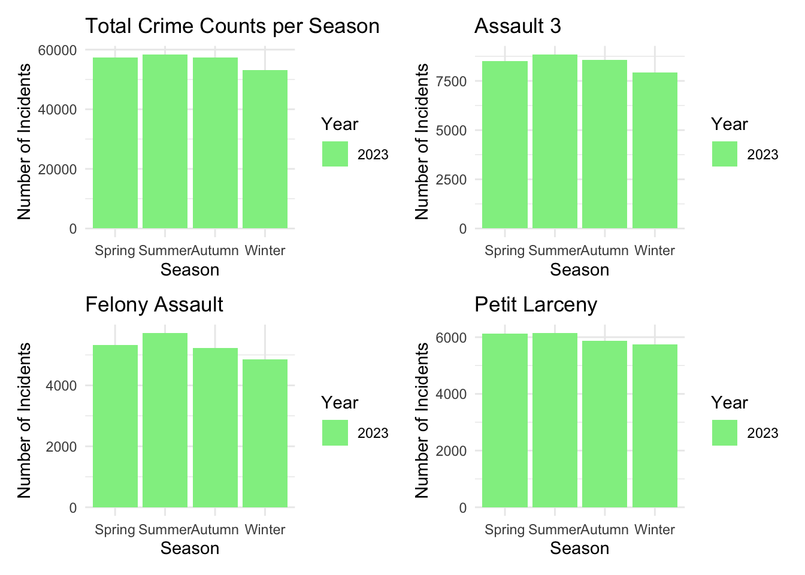
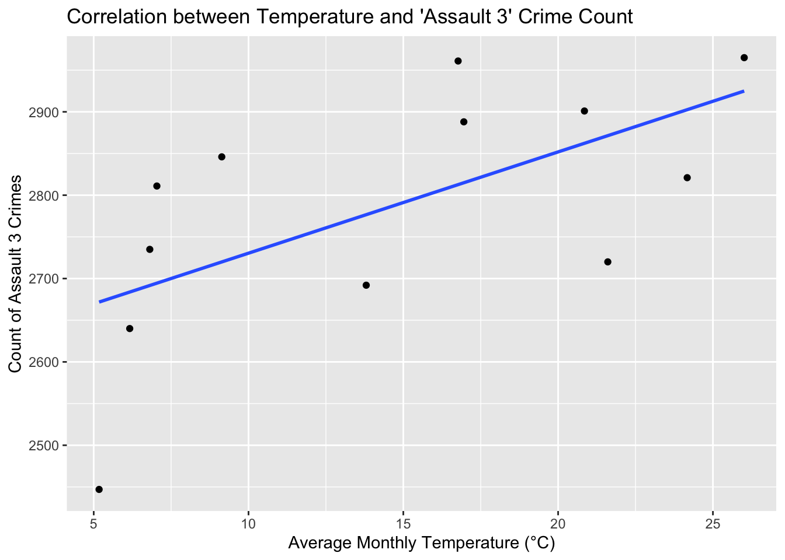
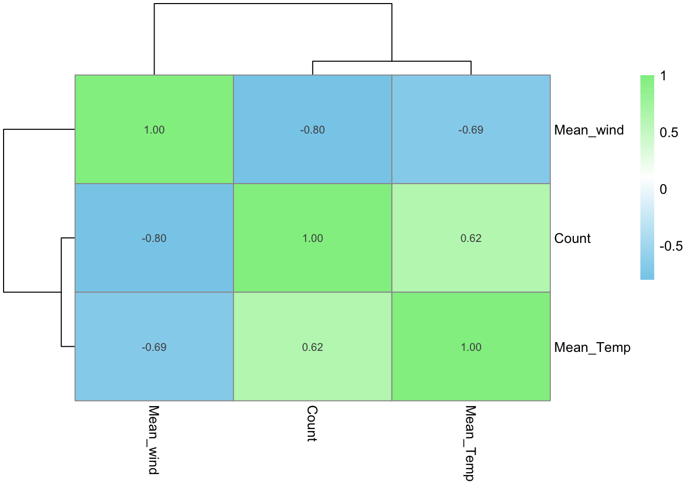
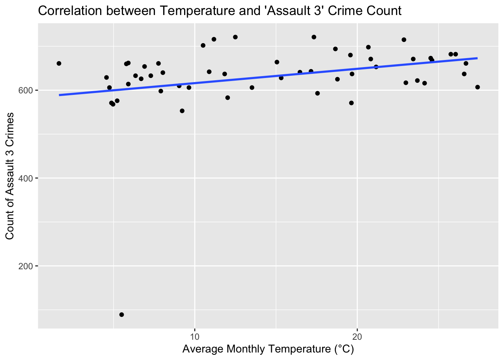

These 4 graphs shows the total crime counts per season and top 3 crime categories per seasons. It all shows a trend that the crime rate will be higher in Summer and Spring, then it will gradually go lower in Autumn and Winter in 2023.This data suggests a correlation between warmer weather and increased crime rates in New York City, indicating that incidents tend to escalate during warmer periods.
Model
[1] 0.616935

assault_data_weekly <- ds %>%
filter(OFNS_DESC == "ASSAULT 3 & RELATED OFFENSES") %>%
mutate(Week = floor_date(as.Date(ARREST_DATE), "week")) %>%
group_by(Week) %>%
summarise(Count = n()) %>%
ungroup()
mean_temp_by_week <- ds %>%
filter(OFNS_DESC == "ASSAULT 3 & RELATED OFFENSES") %>%
mutate(Week = floor_date(as.Date(ARREST_DATE), "week")) %>%
group_by(Week) %>%
summarise(Mean_Temp = mean(temp, na.rm = TRUE)) %>%
ungroup()
mean_wind_by_week <- ds %>%
filter(OFNS_DESC == "ASSAULT 3 & RELATED OFFENSES") %>%
mutate(Week = floor_date(as.Date(ARREST_DATE), "week")) %>%
group_by(Week) %>%
summarise(Mean_Wind = mean(windspeed, na.rm = TRUE)) %>%
ungroup()
correlation_data_weekly <- left_join(assault_data_weekly, mean_temp_by_week, by = "Week") %>%
left_join(mean_wind_by_week, by = "Week")
correlation_plot2 <- ggplot(correlation_data_weekly, aes(x = Mean_Temp, y = Count)) +
geom_point() +
geom_smooth(method = "lm", se = FALSE) +
labs(x = "Average Monthly Temperature (°C)", y = "Count of Assault 3 Crimes",
title = "Correlation between Temperature and 'Assault 3' Crime Count")
print(correlation_plot2)`geom_smooth()` using formula = 'y ~ x'
cor_matrix2 <- cor(correlation_data_weekly[, c("Count", "Mean_Temp","Mean_Wind")], use = "complete.obs")
pheatmap(cor_matrix2,
color = colorRampPalette(c("skyblue", "white", "lightgreen"))(200),
display_numbers = T,
clustering_distance_rows = "euclidean",
clustering_distance_cols = "euclidean",
clustering_method = "complete")
Call:
glm(formula = correlation_data_weekly$Count ~ correlation_data_weekly$Mean_Temp +
correlation_data_weekly$Mean_Wind)
Coefficients:
Estimate Std. Error t value Pr(>|t|)
(Intercept) 542.168 96.452 5.621 8.44e-07 ***
correlation_data_weekly$Mean_Temp 3.611 1.720 2.100 0.0408 *
correlation_data_weekly$Mean_Wind 1.825 4.114 0.443 0.6593
---
Signif. codes: 0 '***' 0.001 '**' 0.01 '*' 0.05 '.' 0.1 ' ' 1
(Dispersion parameter for gaussian family taken to be 7081.872)
Null deviance: 387713 on 52 degrees of freedom
Residual deviance: 354094 on 50 degrees of freedom
AIC: 625.18
Number of Fisher Scoring iterations: 2
Call:
glm(formula = correlation_data$Count ~ correlation_data$Mean_Temp +
correlation_data$Mean_wind)
Coefficients:
Estimate Std. Error t value Pr(>|t|)
(Intercept) 4138.621 590.896 7.004 6.3e-05 ***
correlation_data$Mean_Temp 2.432 5.399 0.451 0.6630
correlation_data$Mean_wind -69.753 26.789 -2.604 0.0286 *
---
Signif. codes: 0 '***' 0.001 '**' 0.01 '*' 0.05 '.' 0.1 ' ' 1
(Dispersion parameter for gaussian family taken to be 9568.613)
Null deviance: 243773 on 11 degrees of freedom
Residual deviance: 86118 on 9 degrees of freedom
AIC: 148.6
Number of Fisher Scoring iterations: 2
Call:
lm(formula = daily_data$Daily_Count ~ daily_data$Temp + daily_data$Wind)
Residuals:
Min 1Q Median 3Q Max
-28.370 -9.303 -1.497 8.869 44.098
Coefficients:
Estimate Std. Error t value Pr(>|t|)
(Intercept) 89.09075 3.03922 29.314 < 2e-16 ***
daily_data$Temp 0.23861 0.08909 2.678 0.00774 **
daily_data$Wind -0.04993 0.11675 -0.428 0.66915
---
Signif. codes: 0 '***' 0.001 '**' 0.01 '*' 0.05 '.' 0.1 ' ' 1
Residual standard error: 12.87 on 362 degrees of freedom
Multiple R-squared: 0.02341, Adjusted R-squared: 0.01802
F-statistic: 4.34 on 2 and 362 DF, p-value: 0.01373
Call:
glm(formula = y ~ conditions + AGE_GROUP + PERP_SEX + PERP_RACE +
ARREST_BORO + ARREST_PRECINCT, family = poisson, data = df_y)
Coefficients: (3 not defined because of singularities)
Estimate Std. Error z value Pr(>|z|)
(Intercept) -1.65493 0.09951 -16.631 < 2e-16 ***
conditionsOvercast -1.78485 0.04457 -40.049 < 2e-16 ***
conditionsPartially cloudy -0.10627 0.01516 -7.008 2.42e-12 ***
conditionsRain -1.10053 0.02463 -44.681 < 2e-16 ***
conditionsRain, Overcast -0.76048 0.02022 -37.614 < 2e-16 ***
conditionsRain, Partially cloudy 0.03254 0.01459 2.230 0.025738 *
conditionsSnow, Partially cloudy -2.29470 0.10609 -21.629 < 2e-16 ***
conditionsSnow, Rain, Overcast -2.21498 0.10860 -20.396 < 2e-16 ***
conditionsSnow, Rain, Partially cloudy -1.93889 0.05382 -36.025 < 2e-16 ***
AGE_GROUP18-24 0.83808 0.03302 25.384 < 2e-16 ***
AGE_GROUP25-44 1.81259 0.03111 58.269 < 2e-16 ***
AGE_GROUP45-64 0.96066 0.03260 29.465 < 2e-16 ***
AGE_GROUP65+ -0.16521 0.04688 -3.524 0.000425 ***
PERP_SEXM 0.73722 0.01257 58.660 < 2e-16 ***
PERP_SEXU -1.43457 0.04609 -31.123 < 2e-16 ***
PERP_RACEASIAN / PACIFIC ISLANDER 1.22719 0.08754 14.019 < 2e-16 ***
PERP_RACEBLACK 2.41670 0.08548 28.273 < 2e-16 ***
PERP_RACEBLACK HISPANIC 1.24769 0.08686 14.364 < 2e-16 ***
PERP_RACEWHITE 1.28721 0.08705 14.787 < 2e-16 ***
PERP_RACEWHITE HISPANIC 1.99411 0.08570 23.270 < 2e-16 ***
ARREST_BOROK -1.14847 0.08945 -12.839 < 2e-16 ***
ARREST_BOROM -0.87635 0.07688 -11.398 < 2e-16 ***
ARREST_BOROQ 1.38875 0.41743 3.327 0.000878 ***
ARREST_BOROS -0.79379 0.08730 -9.093 < 2e-16 ***
ARREST_PRECINCT5 0.02022 0.09205 0.220 0.826094
ARREST_PRECINCT6 0.04568 0.09241 0.494 0.621049
ARREST_PRECINCT7 0.17566 0.08858 1.983 0.047359 *
ARREST_PRECINCT9 0.15933 0.08940 1.782 0.074722 .
ARREST_PRECINCT10 -0.02530 0.09348 -0.271 0.786621
ARREST_PRECINCT13 0.31788 0.08553 3.717 0.000202 ***
ARREST_PRECINCT14 0.87492 0.07627 11.471 < 2e-16 ***
ARREST_PRECINCT17 -0.28175 0.10546 -2.672 0.007548 **
ARREST_PRECINCT18 0.44011 0.08250 5.335 9.56e-08 ***
ARREST_PRECINCT19 0.07032 0.09308 0.755 0.449980
ARREST_PRECINCT20 -0.38285 0.10821 -3.538 0.000403 ***
ARREST_PRECINCT22 -1.09142 0.20707 -5.271 1.36e-07 ***
ARREST_PRECINCT23 0.47131 0.08198 5.749 8.95e-09 ***
ARREST_PRECINCT24 -0.08732 0.09663 -0.904 0.366196
ARREST_PRECINCT25 0.39193 0.08364 4.686 2.78e-06 ***
ARREST_PRECINCT26 0.03176 0.09591 0.331 0.740554
ARREST_PRECINCT28 0.20064 0.08844 2.269 0.023293 *
ARREST_PRECINCT30 0.17438 0.08820 1.977 0.048024 *
ARREST_PRECINCT32 0.73514 0.07990 9.201 < 2e-16 ***
ARREST_PRECINCT33 0.31908 0.08631 3.697 0.000218 ***
ARREST_PRECINCT34 0.39698 0.08440 4.703 2.56e-06 ***
ARREST_PRECINCT40 0.39545 0.04988 7.928 2.23e-15 ***
ARREST_PRECINCT41 -0.14451 0.05774 -2.503 0.012319 *
ARREST_PRECINCT42 0.20755 0.05177 4.009 6.09e-05 ***
ARREST_PRECINCT43 0.22539 0.05082 4.435 9.22e-06 ***
ARREST_PRECINCT44 0.35116 0.05003 7.019 2.23e-12 ***
ARREST_PRECINCT45 -0.36216 0.06084 -5.953 2.63e-09 ***
ARREST_PRECINCT46 0.38984 0.04944 7.885 3.14e-15 ***
ARREST_PRECINCT47 0.29678 0.05050 5.877 4.17e-09 ***
ARREST_PRECINCT48 0.19595 0.05275 3.715 0.000203 ***
ARREST_PRECINCT49 -0.29020 0.05939 -4.886 1.03e-06 ***
ARREST_PRECINCT50 -0.80065 0.07304 -10.962 < 2e-16 ***
ARREST_PRECINCT52 NA NA NA NA
ARREST_PRECINCT60 0.73734 0.09366 7.873 3.47e-15 ***
ARREST_PRECINCT61 0.36033 0.10216 3.527 0.000420 ***
ARREST_PRECINCT62 0.91595 0.09257 9.895 < 2e-16 ***
ARREST_PRECINCT63 0.37582 0.10109 3.718 0.000201 ***
ARREST_PRECINCT66 0.53899 0.10117 5.328 9.95e-08 ***
ARREST_PRECINCT67 1.31269 0.08890 14.766 < 2e-16 ***
ARREST_PRECINCT68 0.67343 0.09964 6.758 1.40e-11 ***
ARREST_PRECINCT69 0.70433 0.09880 7.129 1.01e-12 ***
ARREST_PRECINCT70 0.81328 0.09320 8.726 < 2e-16 ***
ARREST_PRECINCT71 0.80808 0.09516 8.491 < 2e-16 ***
ARREST_PRECINCT72 0.82505 0.09384 8.792 < 2e-16 ***
ARREST_PRECINCT73 1.24677 0.08935 13.953 < 2e-16 ***
ARREST_PRECINCT75 1.48802 0.08704 17.096 < 2e-16 ***
ARREST_PRECINCT76 -0.19118 0.12485 -1.531 0.125706
ARREST_PRECINCT77 0.87359 0.09363 9.331 < 2e-16 ***
ARREST_PRECINCT78 0.21993 0.10857 2.026 0.042798 *
ARREST_PRECINCT79 0.90390 0.09260 9.762 < 2e-16 ***
ARREST_PRECINCT81 0.55679 0.09895 5.627 1.83e-08 ***
ARREST_PRECINCT83 0.89312 0.09281 9.624 < 2e-16 ***
ARREST_PRECINCT84 0.46124 0.10199 4.522 6.12e-06 ***
ARREST_PRECINCT88 0.21501 0.10689 2.012 0.044269 *
ARREST_PRECINCT90 0.54995 0.09809 5.606 2.07e-08 ***
ARREST_PRECINCT94 NA NA NA NA
ARREST_PRECINCT100 -2.39426 0.42201 -5.673 1.40e-08 ***
ARREST_PRECINCT101 -2.00746 0.42004 -4.779 1.76e-06 ***
ARREST_PRECINCT102 -1.65931 0.41817 -3.968 7.25e-05 ***
ARREST_PRECINCT103 -1.31176 0.41720 -3.144 0.001665 **
ARREST_PRECINCT104 -1.73404 0.41869 -4.142 3.45e-05 ***
ARREST_PRECINCT105 -1.47858 0.41762 -3.540 0.000399 ***
ARREST_PRECINCT106 -1.64218 0.41813 -3.927 8.59e-05 ***
ARREST_PRECINCT107 -1.98661 0.41909 -4.740 2.13e-06 ***
ARREST_PRECINCT108 -1.89938 0.41884 -4.535 5.76e-06 ***
ARREST_PRECINCT109 -1.48049 0.41763 -3.545 0.000393 ***
ARREST_PRECINCT110 -1.17777 0.41712 -2.824 0.004749 **
ARREST_PRECINCT111 -2.45244 0.42360 -5.790 7.06e-09 ***
ARREST_PRECINCT112 -2.38702 0.42187 -5.658 1.53e-08 ***
ARREST_PRECINCT113 -1.26789 0.41723 -3.039 0.002375 **
ARREST_PRECINCT114 -1.52999 0.41368 -3.698 0.000217 ***
ARREST_PRECINCT115 -1.37068 0.41750 -3.283 0.001027 **
ARREST_PRECINCT120 0.56024 0.08896 6.297 3.03e-10 ***
ARREST_PRECINCT121 0.24570 0.09403 2.613 0.008979 **
ARREST_PRECINCT122 0.02011 0.10052 0.200 0.841456
ARREST_PRECINCT123 NA NA NA NA
---
Signif. codes: 0 '***' 0.001 '**' 0.01 '*' 0.05 '.' 0.1 ' ' 1
(Dispersion parameter for poisson family taken to be 1)
Null deviance: 45008 on 8615 degrees of freedom
Residual deviance: 15195 on 8519 degrees of freedom
AIC: 38899
Number of Fisher Scoring iterations: 5Polish our graphs and charts
Titles and Labels: We are going to craft clear, descriptive titles and axis labels that succinctly convey the meaning of the data, and use numbers to label each in sequence.
Legends: We need to ensure legends are clear and correctly positioned. Modify legend titles to be informative and concise. Use a color scale that is intuitive and provides good contrast for the data represented.
Captions: we need to include captions that explain the visualization in a bit more detail, highlighting key findings or noting any caveats about the data.
Scales and Breaks: We decide to adjust scales and breaks on axes to make sure they are appropriate for the data’s range and distribution.
Color Choices: We will ensure consistency across multiple visualizations, with the same color schemes, label formats, and styles used throughout.
We are planning to add a interactive graph that could brief will the crime variables in our dataset.